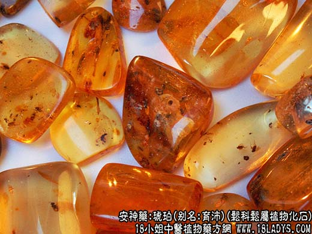

【中药概述】
琥珀，别名：育沛、虎魄、虎珀、江珠、琥魄、兽魄、顿牟、血琥珀、血珀、红琥珀、光珀，为古代松科松属植物的树脂埋藏地下经年久而成的化石。在下滴过程中，有时还粘住昆虫、树叶、花瓣等物。甘、平。归心、肝、膀胱经。 1．镇心安神：用于癫痫，心悸失眠、健忘、惊风等，如（<活幼心书>琥珀抱龙丸）。
2．活血化瘀：用于产后恶露不净，瘀血肿痛、血滞经闭，常配当归，川芎，鳖甲，三棱，元胡，没药，红花，桃仁，五灵脂等。
3．利水通淋：用于膀胱热结而致尿血，血淋、石淋、热淋等，如（<沈括灵苑方>琥珀散）。
【药效鉴别】
本品入心归肝，安神定惊，利水通淋，每恃以为要药，活血化瘀，亦配伍而应用。
【药理作用】
具有延长时间，抗惊厥作用。
【化学成分】
含琥珀酸、琥珀醇、琥珀松香高酸、挥发油等。
【用量用法】
1——3g，研末冲服，不入煎剂。
【真伪鉴别】
1.琥珀摩擦后可产生静电，具有一定的吸附性。若将琥珀在布上摩擦后能吸附芥子，即为真品；
2.若将琥珀加水煮沸不溶化或不变软，即为真品；
3.琥珀燃烧易熔，爆裂有声。
本文解释权归中药名称大全，本文地址https://www.daquan.com/post/1960.html